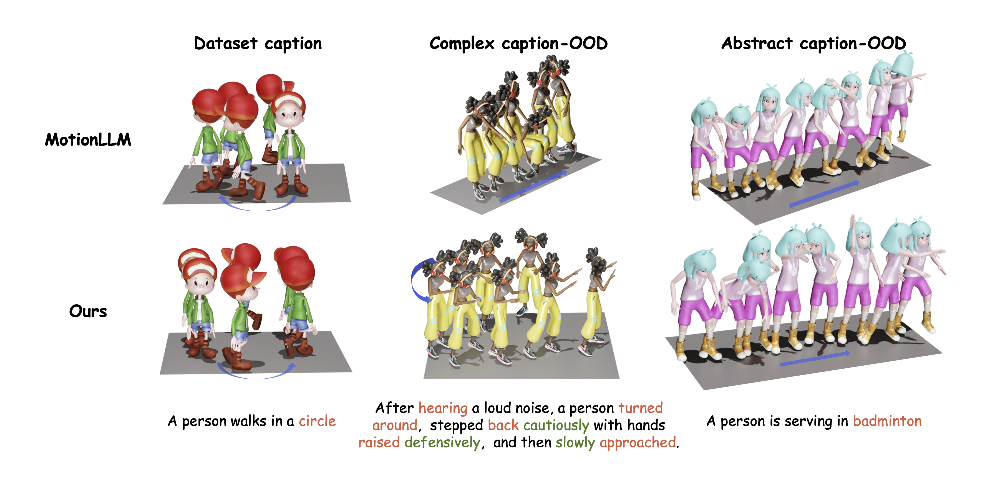

"A person takes a few steps forward, jumps forward with both feet , and immediately turns right upon landing"
Approach Overview

"A person is throwing something."
"A person walks forcefully forward 4 steps."
"A person is walking fast."
"The person is walking slowly."
"A man moves erratically, like a marionette struggling to free itself from its strings."
We showcase Motion-R1's capability to generate diverse and high-quality motions for out-of-distribution prompts.
"After hearing a loud noise, a person turned around , stepped back cautiously with hands raised defensively and then slowly approached."
"A person takes a few steps forward, jumps forward with both feet , and immediately turns right upon landing"
"A person raises arms, arches back slightly, then shifts weight onto the right leg while extending the left leg backward in a poised arabesque position."
"A person jumped up happily, raised hand and spsun excitedly."
"A person is serving in badminton ."
"A person is skipping rope."
"A person is dancing ballroom dance."
"The person walks as if balancing on a tightrope."
"The person mimics swimming in mid-air, as if performing a freestyle stroke without water."
"The person walks through strong wind, leans forward and braces against resistance."
Given the prompt ''A person does Tai chi.'' the LLM generates a step-by-step CoT reasoning trace (<think>) and a structured action plan <output>, covering stance, arm movement, weight transfer, and hand positioning.
We compare Motion-R1 against baselines such as MoMask and MotionLLM. As shown in Left of Figure, Motion-R1 produces smooth, well-structured sequences for simple and multi-step instructions. To evaluate generalization beyond the training distribution, we present qualitative comparisons under two types of out-of-distribution captions, as shown in middle and right of Figure.

@misc{ouyang2025motionr1chainofthoughtreasoningreinforcement,
title={Motion-R1: Chain-of-Thought Reasoning and Reinforcement Learning for Human Motion Generation},
author={Runqi Ouyang and Haoyun Li and Zhenyuan Zhang and Xiaofeng Wang and Zheng Zhu and Guan Huang and Xingang Wang},
year={2025},
eprint={2506.10353},
archivePrefix={arXiv},
primaryClass={cs.CV},
url={https://arxiv.org/abs/2506.10353},
}